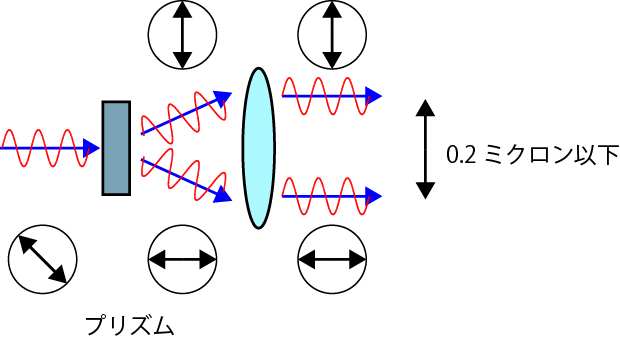

微分干渉顕微鏡の原理-04
ここで，一つの疑問が．．．
二つの光線が像を造るので，二重に見えるのでは？
ということです．
しかし，ずらす量，シアー量，を光学的分解能以下，0.2ミクロン，に設定しているので，二重とは認識されないのです．

さて，微分干渉像を見てみると，何となく立体的に見れないでしょうか？
オリンパス
ニコン(USA)
詳しくは，オリンパスのアメリカのサイトを見ていただくの一番ですが，簡単に説明します．
Wikiに掲載されたものをイメージしてみました．
0.2ミクロン以下といっても，二重であることには間違いありません．従って，像は，
のように，明るいピンクと，暗いピンクのように見えることとなります．
ここで，シアーは左上から右下方向に向かっています．
これを，Photoshopでちょっといじると（レイヤーにおいて，彩度，を選択），
のように立体的に見えることがわかります．エンボス，ですね．
簡単には，このような説明でいいと思います．
詳しくは，オリンパスのアメリカのサイトなどをご覧ください．